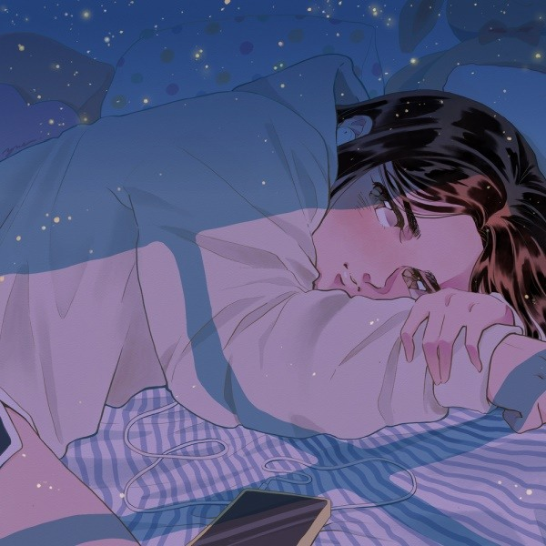

- BOARD
- ALBUM INFO.
- PHOTO
- VEDIO

- 결코 멀어질 수 없는, 멀어지고 싶지 않은 매력, OuiOui(위위)의 새 싱글 “멀어지지 않게”
- 아무리 이기적인 단어를 뱉어도 떠나 보낼 수 없을 것 같은, OuiOui(위위)의 새로운 싱글 [멀어지지 않게] 는 요즘 같은 변덕스러운 날씨와 어울리는
곡이다. 뜨거워진 한낮의 열기가 시간이 지나 차갑게 변하는 밤, 딱 그 정도의 온도를 가진 노래. 타오르던 사랑의 순간은 이런 저런 이유를 붙여 차가워질 때가 있기 마련이다. 그러나 다시
아침이 밝아오면 따뜻한 햇살 속에서 다시 사랑을 그리워하기도 한다. 밤 사이 멀어진 거리가 더 멀어지지 않게, 다시 돌아오는 길이 멀지 않기를. [멀어지지 않게] 는 그런 순간을 담은
노래이다.